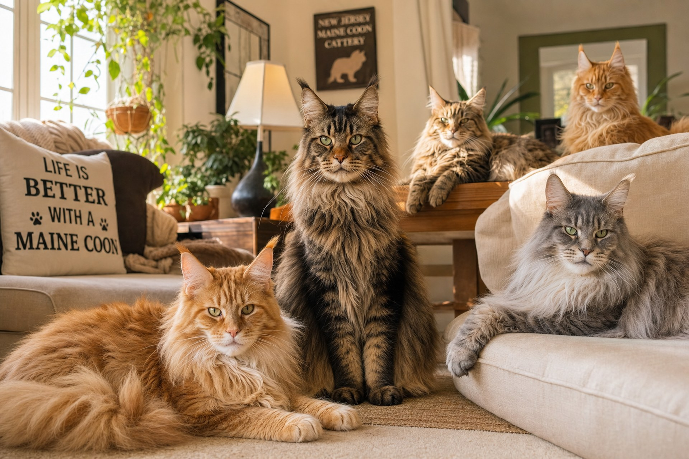

Our Story
A passion for Maine Coons, rooted in health and heart
How It All Began
Garden State Coon was founded in 2018 in Los Angeles by Anna, a lifelong Maine Coon enthusiast with a background in feline genetics. Our cattery is TICA-registered and home to 8 carefully selected cats, all raised indoors as family members.

Our Breeding Program
We select our breeding cats for health, temperament, and adherence to the TICA Maine Coon standard. Every pairing is planned with purpose.
Genetic Screening
All breeding cats are tested for HCM, PKD1, and SMA before any planned litter.
Champion Bloodlines
Our cats descend from TICA Grand Champion and Regional Winner lines.
Careful Pairings
Each breeding is planned to optimize health, type, and temperament for the next generation.
Our Values
Health First
Every kitten leaves with HCM echo, PKD1 DNA test, SMA DNA test, FIV/FeLV test, microchip, FVRCP×2, dewormed×3, and a 2-year genetic health guarantee.
Home-Raised
All kittens are born and raised in our home. They are socialized with children, dogs, and daily household activity for confident, loving temperaments.
Lifetime Support
We stay connected with every family. From nutrition questions to vet referrals — Garden State Coon is your lifelong resource.